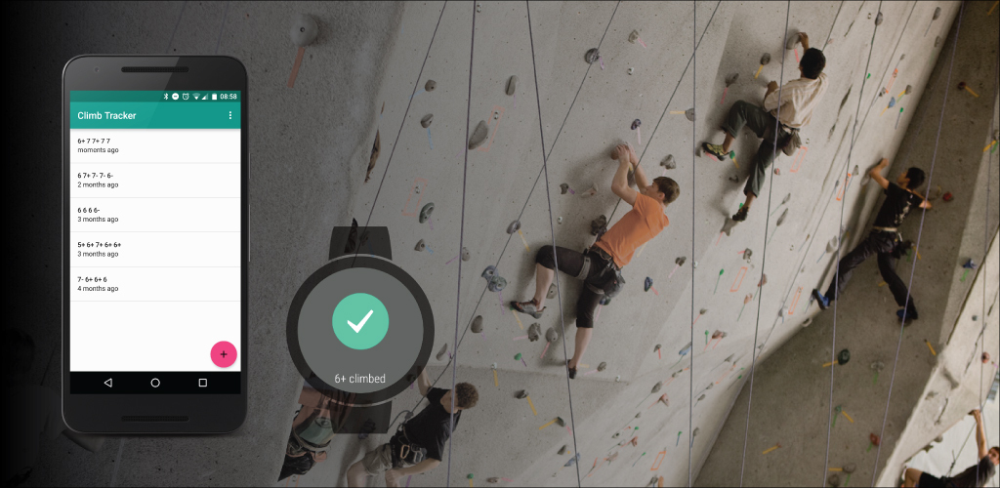
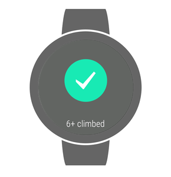
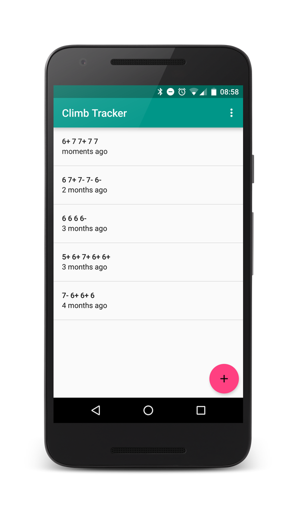
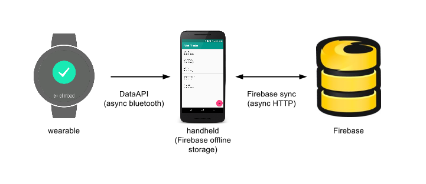

Climb Tracker for Android and Android wear

Here is how I used Android Wear and Firebase to build from scratch an indoor climb tracker.
Install it on Google Play, read the code on GitHub.
I learnt a few things from a first prototype I did:
- I do not want to use my phone in a climbing gym,
- I should not expect to have connectivity in a climbing gym,
- I care more about the grades of the routes I complete than the routes themselves,
- The gym’s routes are changing every few months, too quickly to maintain a database.

So I decided simplify the app to its bare minimum by focusing on this scenario:
From my watch, I log the grade of the routes I complete.
After the session, I can see a list of my climbs on my phone.
Yes, the main scenario uses an wearable device: climbing with a smartwatch is not a problem, it’s always available and does not require to manipulate a phone.

Also, it’s designed offline first: The watch does not require a phone to be nearby, or any internet connection. Once it gets close to its phone, data is transferred from the watch to the phone (once again, no internet required). The data is then stored locally on the phone and when connectivity is available, is synced to a server.
I then added the ability to add a climb from a phone, as I suppose that the intersection between climbers and Android phone owners is bigger than between climbers and Android wear owners 🙂
The grading system can be selected from the Settings menu and the user’s position is recorded when saving the climb, for potential future use.

Technically, it is a native Android app, mostly because I needed to use the Wear SDK, but also because I wanted a reliable app experience and not struggle to imitate a native look and feel using web technologies. Transmitting data from the wearable to the phone uses the Android Wear DataApi.
The rest of the app is using the Firebase SDK with offline mode enabled: Firebase is deciding by itself when to sync the data with its server. I did not write any line of data sync or server-side code. And I loved it.
The app is following the latest permissions guidelines: asking them when opening the application, and being flexible regarding the location permission: if not granted, the location is not recorded but the app keeps working.

The app is released on Google Play. It is open source and released on GitHub. Of course, I accept suggestions, bugfixes and pull-requests.
For example, would you like to translate it in your language?